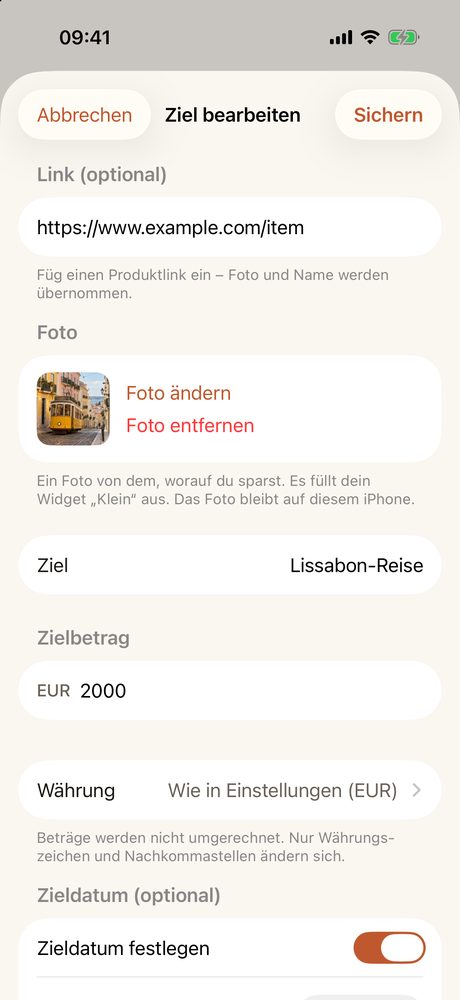
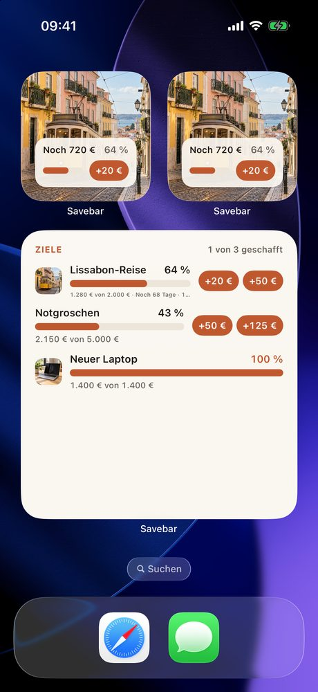

So legst du ein Sparziel auf den Home-Bildschirm deines iPhone
Auf etwas zu sparen fällt leichter, wenn man es vor Augen hat. Ein Widget zeigt den Balken – wie viel du gespart hast und wie viel noch fehlt – dort, wo du viele Male am Tag hinschaust, und du zahlst mit einem Tipp ein.
So richtest du es ein – mit Savebar. Ein Ziel und das kleine Widget sind kostenlos.
1. Ein Ziel anlegen
Öffne Savebar und tippe auf +.
Nötig sind ein Name und ein Zielbetrag.
Optional: Schalte „Zieldatum festlegen“ ein, um die verbleibenden Tage und den Sparbetrag pro Tag zu sehen.
Optional: Füge einen Produktlink ein, im Feld „Link“. Foto und Name werden von der Seite übernommen.
2. Den Betrag für die Widget-Taste wählen
Unter „Beträge im Widget“: Trag dort den Betrag ein, den du normalerweise zur Seite legst. Die Taste im Widget zahlt ihn mit einem Tipp ein, ohne dass du die App öffnest.

3. Das Widget auf den Home-Bildschirm legen
Lege den Finger auf eine freie Stelle des Home-Bildschirms, bis die Apps wackeln.
Tippe auf Bearbeiten (oder +) in der oberen Ecke und suche nach „Savebar“.
Wähle die Größe Klein und tippe auf Widget hinzufügen.
Jedes Mal, wenn du Geld zur Seite legst, tippst du im Widget auf die Betragstaste. Balken und Prozentsatz bewegen sich direkt dort.

Das größere Widget mit mehreren Zielen auf diesem Bild gehört zu Savebar Pro.
Du willst mehr?
Savebar Pro ist ein einmaliger Kauf, kein Abo:
Unbegrenzt viele Ziele
Mittlere und große Widgets mit mehreren Zielen und bis zu zwei Betragstasten pro Ziel
Sperrbildschirm-Widgets
Eine Apple Watch-App mit denselben Betragstasten
Fragen
Wird die App mit meiner Bank verbunden?Nein. Du trägst die Beträge selbst ein – also kein Login und nichts zu verknüpfen.
Wie viele Ziele kann ich kostenlos anlegen?Eins, mit dem kleinen Widget für den Home-Bildschirm. Savebar Pro, ein einmaliger Kauf, bietet unbegrenzt viele Ziele, mittlere und große Widgets mit mehreren Zielen, Sperrbildschirm-Widgets und eine Apple Watch-App.
Kann ich einen Betrag einzahlen, der nicht auf der Taste steht?Ja. Öffne das Ziel in der App und tippe auf „+ Einzahlen“, um einen beliebigen Betrag einzugeben.
Wie wähle ich aus, welches Ziel das Widget zeigt?Lege den Finger auf das Widget, tippe auf „Widget bearbeiten“ und wähle das Ziel.